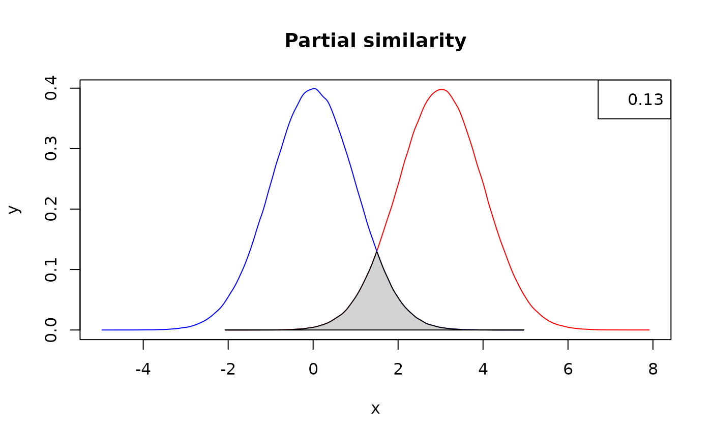

This vignette deals with more real-world examples than the documentation examples. It complements the user manual and eventual published references on the usage of the package.
The main place in evolutionary biology where the features contained
in tbea belong is in the core of divergence time estimation
and incorporation of paleontological and geological information into
estimation of the time component of phylogenies and diversification
analyses. Here, the tools present in the package aid in implementing
information from these fields into Bayesian analyses, mainly through
specification of priors, the most conspicuous feature of Bayesian
inference. However, prior specification is a very difficult task and
there are few if any rules to follow, along with a lot of
misunderstanding along with clearly-unjustified practices.
Priors
Prior specification depends strongly on what we are trying to use in order to calibrate a given phylogeny. For instance, node calibration and tip calibration work in different ways, and prior specification will not only depend on this but also on the nature of the information we are trying to use as priors.
In the most common case, we have a fossil taxon (or occurrence) that could inform us about the age of a given node (node calibration). However, we lack exact information on two things: When the organism lived (measured without error), and when a given diversification event took place (i.e., the exact age of a node). What we have is a fossil, whose age has been inferred or measured with error or uncertainty. It is this information, uncertainty, what we expect to model through priors (or at lease what should be done in real life). A prior is in itself a probability density function (PDF hereafter), that is, a mathematical function describing the probability that a variable take a given value inside an given interval. More or less precise statements can be made with aid of PDFs, such as that it is more likely that a variable X takes a value between values a and b than rather between c and d; or which is the expected value for the variable of interest.
Now, what we have is age information such as the following instances:
The fossil comes from a volcanic layer that has been dated with radiometric techniques with a specific value uncertainty, for instance, 40.6 0.5 Ma, where 0.5 is the standard deviation .
The fossil comes from a sedimentary unit that is said to be of Miocene age (5.33 to 23.03 Ma).
The fossil comes from a layer bracketed by two levels with volcanic ash that have been dated as 10.2 0.2 and 12.4 0.4 respectively. So, the fossil itself have an age determined as interpolated between the layers that have real age information.
How can we convert this information into legitimate priors?
The findParams function
Given that we have prior on the age of a fossil to be 1 - 10 Ma and that we want to model it with a lognormal distribution, fin the parameters of the PDF that best reflect the uncertainty in question (i.e., the parameters for which the observed quantiles are 1, 5.5, and 10, assuming that we want the midpoint to reflect the mean of the PDF:
tbea::findParams(q = c(1, 5.5, 10),
p = c(0.025, 0.50, 0.975),
output = "complete",
pdfunction = "plnorm",
params = c("meanlog", "sdlog"))## Warning in tbea::findParams(q = c(1, 5.5, 10), p = c(0.025, 0.5, 0.975), :
## initVals not provided, will use the mean of quantiles in q for _each_ of the
## parameters. Parameter estimates might not be reliable even though convergence
## is reported.## Warning in plnorm(q = c(1, 5.5, 10), meanlog = 1.5962890625, sdlog =
## -1.83852539062498): NaNs produced## Warning in plnorm(q = c(1, 5.5, 10), meanlog = 1.5962890625, sdlog =
## -1.83852539062498): NaNs produced## Warning in plnorm(q = c(1, 5.5, 10), meanlog = 0.397998046874998, sdlog =
## -1.16190185546872): NaNs produced## Warning in plnorm(q = c(1, 5.5, 10), meanlog = 0.840979003906248, sdlog =
## -0.149819946289039): NaNs produced## Warning in plnorm(q = c(1, 5.5, 10), meanlog = 1.3444351196289, sdlog =
## -0.0238803863525183): NaNs produced## Warning in plnorm(q = c(1, 5.5, 10), meanlog = 1.83548833280802, sdlog =
## -0.291388470306973): NaNs produced## Warning in plnorm(q = c(1, 5.5, 10), meanlog = 1.86174815893173, sdlog =
## -0.0716773837804601): NaNs produced## Warning in plnorm(q = c(1, 5.5, 10), meanlog = 1.7567301876843, sdlog =
## -0.09538053739814): NaNs produced## $par
## [1] 1.704744 0.305104
##
## $value
## [1] 0.0006250003
##
## $counts
## function gradient
## 101 NA
##
## $convergence
## [1] 0
##
## $message
## NULLNow we have a published study that specified a lognormal prior (with
or without justification, that’s another question) and we want to
actually plot it outside of beauti, for instance, in order
to assess similarity between the posterior and the prior. How can we
plot it in R and use its data as any other statistical density?
The lognormalBeast function
Generate a matrix for the lognormal density with mean 1 and standard deviation 1, with mean in real space, and spanning values in x from 0 to 10, and then plot it:
lnvals <- tbea::lognormalBeast(M = 1, S = 1, meanInRealSpace = TRUE, from = 0, to = 10)
plot(lnvals, type = "l", lwd = 3)Density similarity
One hot topic in model and tool comparisons is the similarity of the posterior to the prior, that is, how much could our results resemble de distribution set in the prior. For instance, if the posterior is identical to the prior, that means that the likelihood (or the data) is not providing information, and this is very risky as there would be the potential to manipulate the results of Bayesian analyses.
The measureSimil function
Measure and plot the similarity between two distributions partially overlapping:
set.seed(1985)
colors <- c("red", "blue", "lightgray")
below <- tbea::measureSimil(d1 = rnorm(1000000, mean = 3, 1),
d2 = rnorm(1000000, mean = 0, 1),
main = "Partial similarity",
colors = colors)
legend(x = "topright", legend = round(below, digits = 2)) The number in the legend indicates an overlap of 0.13, and as such, a measure of similarity between the densities.
Geochronology
In the third case of possible age estimates for our calibrations, can we clump together a number of age estimates from several samples in order to build a general uncertainty for the interval?
Do the age estimates for the boundaries of the Honda Group (i.e., samples at meters 56.4 and 675.0) conform to the isochron hypothesis?
data(laventa)
hondaIndex <- which(laventa$elevation == 56.4 | laventa$elevation == 675.0)
mswd.test(age = laventa$age[hondaIndex], sd = laventa$one_sigma[hondaIndex])## [1] 3.697832e-11The p-value is smaller than the nominal alpha of 0.05, so we can reject the null hypothesis of isochron conditions.
Do the age estimates for the samples JG-R 88-2 and JG-R 89-2 conform to the isochron hypothesis?
twoLevelsIndex <- which(laventa$sample == "JG-R 89-2" | laventa$sample == "JG-R 88-2")
dataset <- laventa[twoLevelsIndex, ]
# Remove the values 21 and 23 because of their abnormally large standard deviations
tbea::mswd.test(age = dataset$age[c(-21, -23)], sd = dataset$one_sigma[c(-21, -23)])## [1] 0.993701The p-value is larger than the nominal alpha of 0.05, so we cannot reject the null hypothesis of isochron conditions